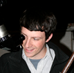
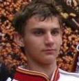
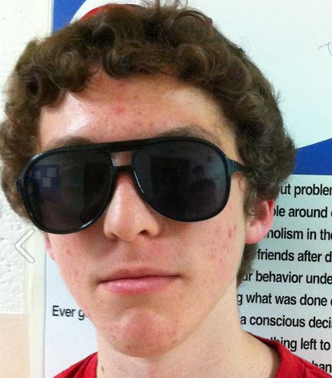
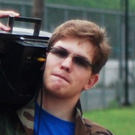
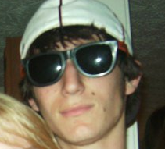
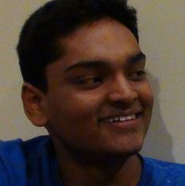
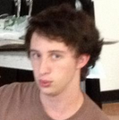
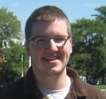

|
Biographies |

|
OSCAAR Code Team
Brett Morris
Supervisor of the coding team. Brett graduated from the University of Maryland with degrees in both Physics and Astronomy, receiving High Honors from the Astronomy Department. He is currently working as a research assistant at the Goddard Center for Astrobiology at the Goddard Space Flight Center.
Jacod Endres
Jacob is an undergraduate at the University of Maryland who is majoring in Computer Science.
Dan Galdi
Dan is majoring in Computer Science at the University of Maryland.
Sam Gross
Sam is a sophomore who is majoring in Computer Engineering at the University of Maryland.
Website Development Team
Harley Katz
Director of the web development team.
Naveed Chowdhury
Naveed is currently a sophomore at the University of Maryland who is majoring in Material Science.
Steve Noll
Steve is a sophomore at the University of Maryland who is pursuing a major in Geology.
Jared King
Jared is a sophomore who is majoring in Mechanical Engineering at the University of Maryland.